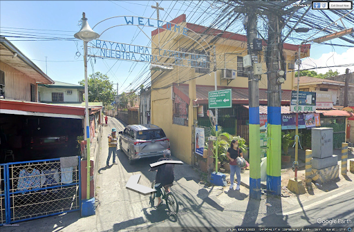

See around the blind corner before it's too late.
UDSpot is a smart prototype that uses ultrasonic distance sensors to detect vehicles sneaking up on blind spots — then warns drivers with color-coded LED signals, before they ever meet.
Blind corners are hidden killers.
Drivers can't see what they can't see around a corner. Every second of hesitation at a blind junction is a second of risk — UDSpot buys that second back.
Sources: World Health Organization road-safety estimates & Philippine Statistics Authority. Full details inside the paper.
Three steps. Zero surprises.
1 · Detect
Four ultrasonic distance sensors continuously scan both lanes, bouncing 40 kHz waves to measure exactly how far an oncoming car is.
2 · Decide
An Arduino Uno R3 reads the echo times, weighs who has right-of-way, and decides the signal to show — in milliseconds.
3 · Warn
RGB LEDs flash green, amber, or red — a language every driver already knows — so both vehicles slow before they meet.
Approach the blind corner.
Drag the car toward the corner. Watch the sensors wake up and the LED signals change — exactly the way the prototype does. (Scale: 1:24 vehicle on the 60 cm test track.)
Tested. Measured. Repeated.
Every headline number below comes from actual trials in the physical diorama — three runs per test, no rounding of the truth.
Detection trials
The ultrasonic sensors caught the approaching vehicle in every single test run.
Correct LED signals
Every color and flash the system displayed matched exactly what it should have.
Standoffs avoided
Without UDSpot the same road locked up in 4 of 6 scenarios. With it — six for six.
Standoff = two vehicles locked at a blind corner, unable to proceed. 6 scenarios, two 1:24 RC cars.
Small road. Big idea.

UDSpot is a table-sized diorama of a real junction: a two-way main road crossing a narrower one-lane road, with a blind corner where drivers simply cannot see each other.
- Diorama101.6 × 76.2 cm
- Roads1:28 scale
- Vehicles1:24 RC cars
- Scenarios6 exact junction cases
- Build methodADDIE model, 5 phases



Four students. One mission.
Created as the senior Project Capstone of the Science, Technology, Engineering, and Mathematics strand.
Adviser Ms. Maria Aubelle C. Floranda, LPT, MAT
Panel Dr. Silk Dela Paz · Mr. Jojo Potenciano · Ms. Nenet Ayson
Special thanks — Mr. Bernie F. Engada (diorama & circuitry) · Mr. Seth Plata (coding)
The complete research, 102 pages.
Every table, every code, every reference — as presented to the panel at Elizabeth Seton School — South.